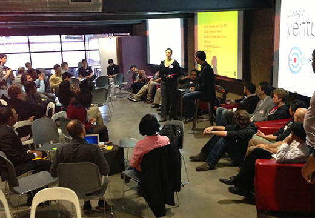
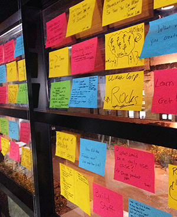

Rick Klau from the Google Ventures Startup Lab shared advice and kicked off an evening of small-group roundtable discussions with entrepreneurs and students at a recent event hosted by Google Ventures and Epicenter.

Leticia Britos Cavagnaro, associate director of Epicenter, introduces Rick Klau of Google Ventures at a Stanford University event on March 1, 2013.
By Anna Li
Originally posted on Peninsula Press
Many Silicon Valley entrepreneurs tout failure as the special sauce to their long-term success. Rick Klau disagrees.
“Celebrate failure – I don’t think that’s true,” said Klau, a partner at Google Ventures’ Startup Lab. “I don’t celebrate failure. I embrace it though. I’ll learn from it. Failure ultimately is just data. It’s a binary thing that’s helpful.”
Klau joined 12 entrepreneurs and 70 participants Friday evening to discuss the start-up process at “Stories from the Field,” a Stanford Entrepreneurship Week event with Google Ventures-backed founders.
Silicon Valley is a region rich with entrepreneurship and innovation. According to the 2013 Silicon Valley Index, an annual report published by the civic group Joint Venture Silicon Valley, venture capitalists invested more than $6 billion in companies in 2012; angel investments grew 90 percent in 2012.
Despite the money flowing through the Valley, many start-ups either don’t take off or fail in their early stages of development.
Klau offered insight into pitfalls that catch young founders off guard and eventually kill their budding companies. “What you should fear is small successes,” he said. His reasoning came from an anecdote that Sergey Brin, Google’s cofounder, shared with him at a conference.
Before Brin and Larry Page created the algorithm that eventually became Google Inc.’s search engine, they invented for fun a way to automate ordering pizza via fax machine. Brin supposedly said that if the idea had been successful, he and Page may have just settled for creating a pizza-ordering system rather than realizing their full potential, Klau said.
The point of Klau’s story was that entrepreneurs shouldn’t fear failure – but rather small successes, which often pose the most dangerous distractions for an innovator.
After Klau’s speech, the event shifted gears to a speed-dating-like arrangement where participants sat in circles with one or two guest entrepreneurs, who run start-ups backed by Google Ventures. The discussions lasted for fifteen minutes until a gong signaled the founders to switch to a new circle.

Insights from the discussions with the entrepreneurs were captured and posted on the d.school windows for the entire group to see.
Leticia Britos Cavagnaro, associate director of the National Center for Engineering Pathways to Innovation (Epicenter) and a faculty member at Stanford’s d.school, came up with the idea of organizing the event so students could ask investors and founders questions directly rather than the traditional format of listening as a static audience.
“I wanted this to be very interactive,” Britos Cavagnaro said. “We need to get students at Stanford and beyond in touch with people going after big ideas. That’s what Google Ventures is about.”
Tom Serres, the founder of Rally.org, a website that helps people raise money for social causes, was one of the founders who shared his advice to students and nascent entrepreneurs. He said that he hired many people who previously worked in politics because they have a “natural hustle and swagger to how they get” stuff “done.” He said that people who “get stuff done” are the best to have on a team where employees don many different hats.
Rally.org receives funding from various investment companies including Google Ventures. The start up has 5 million users, across 25,000 organizations and has helped raise $300 million since its beginning – an example of the caliber of businesses that Google Ventures backs.
Klau mentioned that Google Ventures works as an independent arm of Google. He said that the Google Ventures invests purely based on financial return, without considering how a start-up might affect Google’s business. His role at the Startup Lab is to match budding businesses to experts at Google who can share their experience and wisdom to help the start-ups succeed.
Klau ended his talk by offering a lofty piece of advice to a captive audience: “Think big. Don’t be afraid to set an extraordinary goal.”